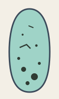
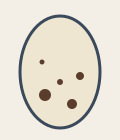
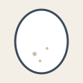

Guillemot: long and pointed, no two alike.

Razorbill: rounder, on a ledge or in a crack.
Seabirds that breed on sea cliffs lay their eggs where no fox can reach them, and that is about all the comfort the site offers. A guillemot builds no nest at all. It lays a single egg on a bare ledge, often only a hand's width deep, in a crowd of neighbors standing shoulder to shoulder. The egg has to survive the wind, the jostling and the parents shuffling over it for a month before the chick hatches.
The shape helps. A guillemot egg is long and strongly pointed at one end, and it sits on the rock with more of its surface touching the ledge than a round egg would. The old explanation was that it rolls in a tight circle when knocked; newer measurements put more weight on how steady it sits on a sloping ledge and how well the blunt end stays clean. The razorbill, which nests in cracks and under boulders, lays a rounder egg.
The colors are just as striking. Guillemot eggs range from white through cream to deep blue-green, scrawled and spotted with black and brown, and the pattern of each one is so individual that the parents are thought to recognize their own egg among dozens on the same ledge.

Puffins nest on the grassy slopes above the cliffs instead, in burrows they dig themselves or take over from rabbits. An egg laid in the dark has nothing to hide from and no ledge to fall from, and it shows: a puffin egg is plain white, perhaps faintly marked, and nearly round. Both parents take turns to keep it warm, and later to bring fish to the chick, which stays underground until it is ready to fly out to sea on its own, usually at night.